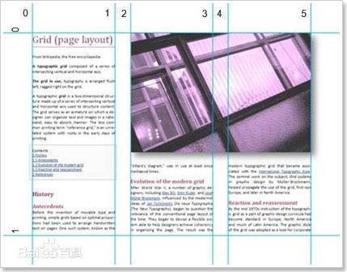

武则天(624年~705年)是中国历史上唯一一个正统的女皇帝(唐高宗时代曾出现另一个民间起义的女皇帝陈硕真)，也是继位年龄最大的皇帝(67岁即位)，又是寿命最长的皇帝之一(终年82岁)。她到底是怎么死的呢?历史上的的武则天当真的像电视剧中的老死的吗史载：武则天病逝于神龙元年农历十一月二十六日(705年12月16日)，是在 上阳宫病死去世的，她死的年纪是82岁，是历史上比较长寿的帝 王之一，死后与高宗合葬乾陵。 遗诏省去帝号，称”则天大圣皇 后“。
武则天(624年~705年)是中国历史上唯一一个正统的女皇帝(唐高宗时代曾出现另一个民间起义的女皇帝陈硕真)，也是继位年龄最大的皇帝(67岁即位)，又是寿命最长的皇帝之一(终年82岁)。她到底是怎么死的呢?历史上的的武则天当真的像电视剧中的老死的吗史载：武则天病逝于神龙元年农历十一月二十六日(705年12月16日)，是在上阳宫病死去世的，她死的年纪是82岁，是历史上比较长寿的帝王之一，死后与高宗合葬乾陵。遗诏省去帝号，称”则天大圣皇后“。
武则天(624年~705年)是中国历史上唯一一个正统的女皇帝(唐高宗时代曾出现另一个民间起义的女皇帝陈硕真)，也是继位年龄最大的皇帝(67岁即位)，又是寿命最长的皇帝之一(终年82岁)。她到底是怎么死的呢?历史上的的武则天当真的像电视剧中的老死的吗史载：武则天病逝于神龙元年农历十一月二十六日(705年12月16日)，是在上阳宫病死去世的，她死的年纪是82岁，是历史上比较长寿的帝王之一，死后与高宗合葬乾陵。遗诏省去帝号，称”则天大圣皇后“。
武则天执政正面评价：武后善治国、重视延揽人才，首创科举考试的“殿试”制度，而且知人善任，能重用狄仁杰、张柬之、桓彦范、敬晖、姚崇等中兴名臣。国家在武则天主政期间，政策稳当、兵略妥善、文化复兴、百姓富裕，故有“贞观遗风”的美誉，亦为其孙唐玄宗的开元之治打下了长治久安的基础，武则天对历史做出过巨大的贡献。  免责声明：以上内容源自网络，版权归原作者所有，如有侵犯您的原创版权请告知，我们将尽快删除相关内容。 武则天执政正面评价：武后善治国、重视延揽人才，首创科举考试的“殿试”制度，而且知人善任，能重用狄仁杰、张柬之、桓彦范、敬晖、姚崇等中兴名臣。国家在武则天主政期间，政策稳当、兵略妥善、文化复兴、百姓富裕，故有“贞观遗风”的美誉，亦为其孙唐玄宗的开元之治打下了长治久安的基础，武则天对历史做出过巨大的贡献。 免责声明：以上内容源自网络，版权归原作者所有，如有侵犯您的原创版权请告知，我们将尽快删除相关内容。